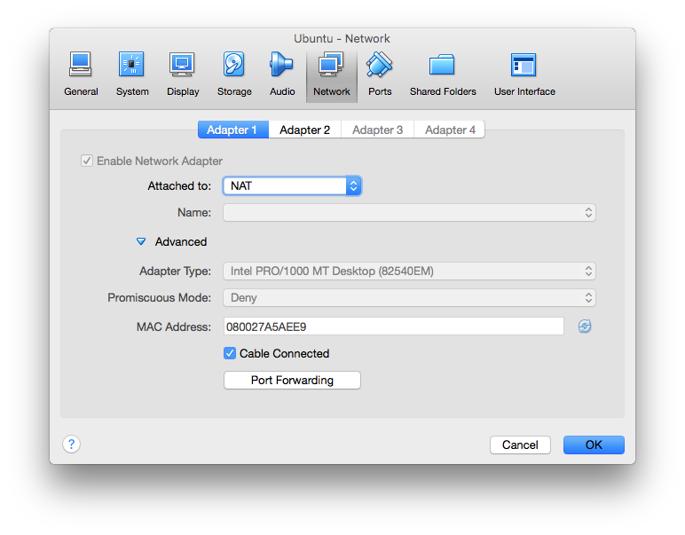
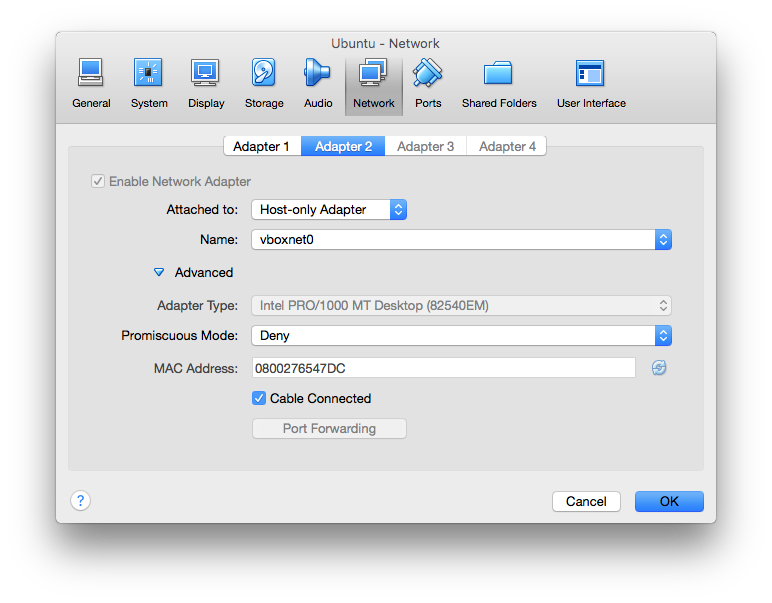
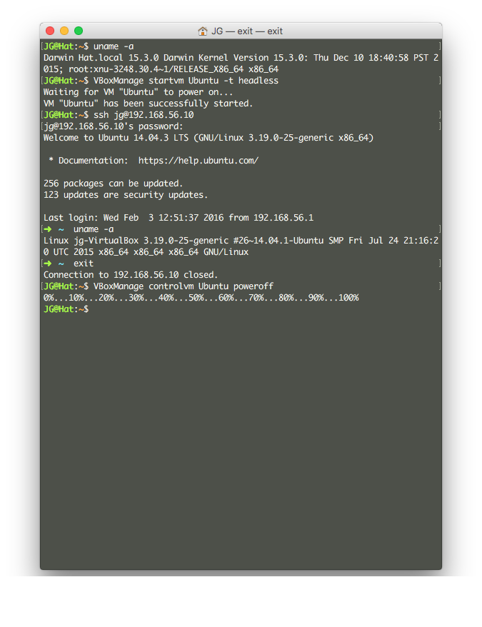
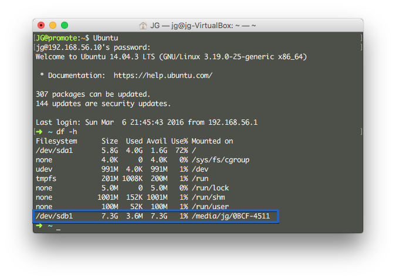
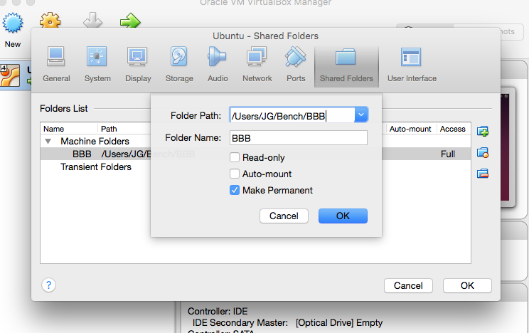

更新：2016-04-15
0 前言
我们经常需要在 Linux 环境下进行嵌入式开发，但是目前又不能完全抛弃 Windows 或者 OS X，所以我们经常需要用虚拟机来搭建开发环境，但是虚拟机又很臃肿，而且如果配置不高的电脑会运行的很慢。有没有一种方便在各电脑间拷贝运行速度又很快的解决方案呢？当然是有的。以下是几种解决方案。
首先虚拟机如果想要运行速度快必须使用 Headless 模式运行或者安装服务器版本的 Linux，也就是去掉了图形界面，但是我们又突然需要图形界面怎么办？以下三种方案都适用于桌面版本的 Linux 或者服务器版本的 Linux。
| 方案 | 优点 | 缺点及技术难度 |
|---|---|---|
| Virtual Box | 可以使用 Headless 模式运行 Linux 减少 CPU 利用率 | 便捷性较差，如果从 PC 拷贝到 Mac 需要重新设置网络和共享文件夹，使用起来非常简单 |
| Vagrant | 继承了 Virtual Box 的优点并且利用 Vagrant 可以很方便的打包分发镜像，共享目录等功能 | 稍有难度，需要学习 Vagrant 的相关命令 |
| Vagrant + Docker | 继承了 Vagrant 的优点并且可以利用 Docker 管理生产环境，不仅可以实现系统镜像的分发，也可以实现生产环境的分发 | 难度较大，还需要学习 Docker 相关的知识 |
如果你有很多主机或者很多人和你协同工作，需要不同主机上配置同一套开发环境，利用 Virtual Box 和 Vagrant 可以把整个系统打包并分发给各个主机，如果系统是服务器版几百兆还能接受，如果是桌面版几个 G 的大小每次分发显然不方便。但是利用 Vagrant + Docker 不仅可以把整个系统在各个主机之间分发还可以直接把开发环境分发给别的主机，什么意思呢？就是你当前开发环境下新安装了个几个库或者几个工具，别的主机还没安装，你可以直接把当前的环境打包给其他主机，而不用打包整个操作系统。
因为如果需要使用桌面版系统 Vagrant 相对于直接使用 Virtual Box 没什么优势，所以目前我就利用 Virtual Box 的 Headless 模式运行 Ubuntu 再利用 SSH 操作虚拟机。Docker 使用方式后续更新。
1 安装环境
安装好 Virtual Box 和 Ubuntu 之后再安装 virtualbox guest additions。接着设置网络为下图：
 
2 安装 SSH 服务器
安装 SSH Server:
sudo apt-get install openssh-server
编辑 /etc/network/interfaces 文件，添加以下内容：
auto eth1
iface eth1 inet static
address 192.168.56.10
netmask 255.255.255.0
在 Ubuntu 终端下运行 sudo ifup eth1。
在主机上运行 ssh 192.168.56.10 -l xxx xxx 为 Ubuntu 用户名称，这样就能通过 SSH 访问虚拟机了。
3 控制虚拟机
启动和关闭虚拟机
通过命令行控制虚拟机 列出虚拟机：
VBoxManage list vms
使用 headless 模式运行虚拟机:
VBoxManage startvm Ubuntu -t headless
关闭虚拟机:
VBoxManage controlvm Ubuntu poweroff
下图是用 Mac 通过 SSH 访问 headless Ubuntu 的过程：

挂载 USB 设备
可以通过 VBoxManage 为虚拟机挂载 USB 设备。 我们需要为虚拟机挂载一个 USB 存储设备，首先列出宿主机的 USB 设备列表：
JG@promote:~$ VBoxManage list usbhost
Host USB Devices:
UUID: aa3125cc-6c05-4066-b07c-4ea0c6aaf352
VendorId: 0x05ac (05AC)
ProductId: 0x0252 (0252)
Revision: 1.24 (0124)
Port: 2
USB version/speed: 0/Full
Manufacturer: Apple Inc.
Product: Apple Internal Keyboard / Trackpad
Address: p=0x0252;v=0x05ac;s=0x000000005bdc094d;l=0xfa120000
Current State: Unavailable
UUID: c2d28499-2511-4b73-9316-fe116339bd11
VendorId: 0x05ac (05AC)
ProductId: 0x821a (821A)
Revision: 0.66 (0066)
Port: 3
USB version/speed: 0/Full
Manufacturer: Apple Inc.
Product: Bluetooth USB Host Controller
Address: p=0x821a;v=0x05ac;s=0x0000000069cc5ddb;l=0xfa113000
Current State: Available
UUID: dbdbca1a-158a-45a8-9691-169296fc386d
VendorId: 0x05ac (05AC)
ProductId: 0x8242 (8242)
Revision: 0.22 (0022)
Port: 1
USB version/speed: 0/Low
Manufacturer: Apple Computer, Inc.
Product: IR Receiver
Address: p=0x8242;v=0x05ac;s=0x0000000058d9b5c6;l=0xfd110000
Current State: Available
UUID: f7d8f411-b32b-4b3e-8d9f-24776ab9782d
VendorId: 0x05ac (05AC)
ProductId: 0x8509 (8509)
Revision: 5.22 (0522)
Port: 2
USB version/speed: 0/High
Manufacturer: Apple Inc.
Product: FaceTime HD Camera (Built-in)
SerialNumber: CC2B8F05FPDG6LL0
Address: p=0x8509;v=0x05ac;s=0x000000004e187314;l=0xfa200000
Current State: Available
UUID: 4592a209-8182-4843-9729-3bff607d78a7
VendorId: 0x05e3 (05E3)
ProductId: 0x0736 (0736)
Revision: 2.114 (02114)
Port: 3
USB version/speed: 0/High
Manufacturer: Generic
Product: USB Storage
SerialNumber: 000000000272
Address: p=0x0736;v=0x05e3;s=0x00001ae27eb59b44;l=0xfa130000
Current State: Available
可以看到最后一个就是我们需要的 USB Storage 设备，我们利用 VBoxManage 挂载：
JG@promote:~$ VBoxManage controlvm Ubuntu usbattach 4592a209-8182-4843-9729-3bff607d78a7
挂载成功，可以用 df -h 命令查看：

文件夹共享
与宿主机通过共享文件夹进行文件交换,首先设置共享文件夹：

设置保存后在虚拟机上通过命令挂载共享文件夹：
sudo mount.vboxsf BBB /mnt/BBB
改变虚拟机磁盘大小
先改变虚拟磁盘的大小：
VBoxManage modifyhd YOUR_HARD_DISK.vdi --resize SIZE_IN_MB
然后打开 LInux，安装 GPart：
sudo apt-get install gparted
打开 GPart 把未分区的空间调整至相应的分区，有的时候需要把 swap off。